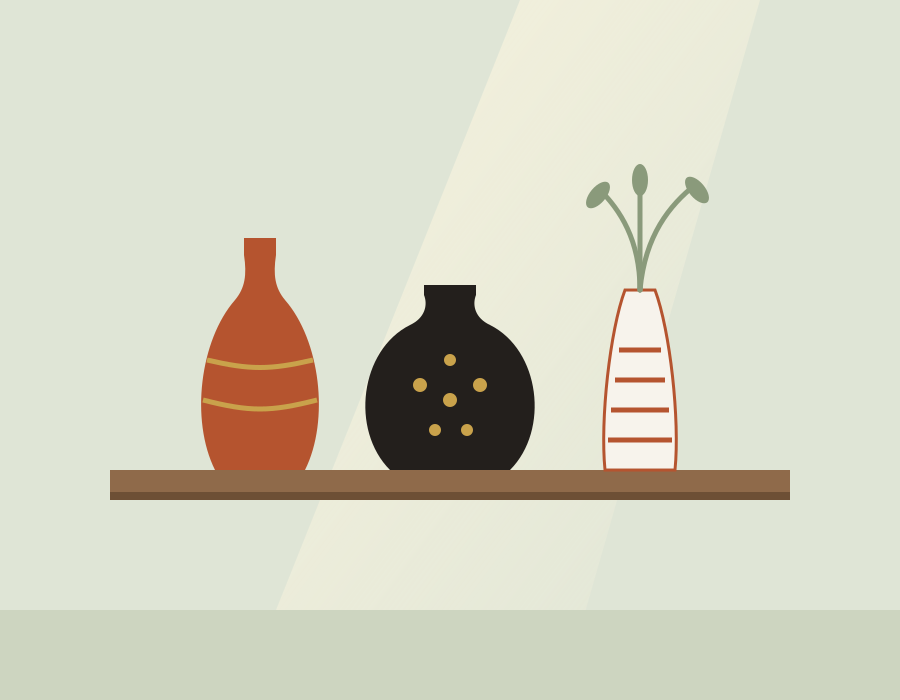

Sanatı izlemek kadar yapmak da değerlidir
Narenci, 2019'da İzmit'te küçük bir seramik atölyesi olarak başladı. Zamanla komşu atölyeler ve sanatçılar da bize katıldı; bugün resim, seramik ve heykel dallarında hem eser sergileyen hem de eğitim veren bir galeri ve atölye platformuyuz.
Adımızı, Farsça'da turuncu anlamına gelen narenci sözcüğünden aldık. Turuncu; gün batımının, kilin ve fırının sıcaklığını taşıyor. Biz de ziyaretçilerimize bu sıcaklığı hissettirmek istiyoruz.
Misyon ve Vizyonumuz
Bizi biz yapan üç şey
Erişilebilirlik
Sanat, herkesin ulaşabileceği bir alan olmalı. Ücretsiz sergi girişi, öğrenci indirimi ve engelsiz mekânımızla bunu önemsiyoruz.
Üretkenlik
Eser izlemek ilham verir, üretmek dönüştürür. Atölyelerimizin her biri uygulamalıdır ve katılımcı bir eserle ayrılır.
Özgünlük
Her sanatçının ve öğrencinin kendi sesini bulmasına alan açıyoruz; kalıp değil, yöntem öğretiyoruz.
Yıllar içinde Narenci
- 2019
İlk atölye
İzmit'te 6 çarklı küçük bir seramik atölyesi olarak açıldık.
- 2021
Resim ve heykel atölyeleri
İki yeni dal ve ilk eğitmen kadromuzla büyüdük.
- 2023
Sergi Salonu
220 m²lik iki salonlu sergi alanımız ziyarete açıldı.
- 2025
Çevrim içi ön kayıt
Atölye kayıtlarını internet sitemize taşıdık.
- 2026
Narenci
Galeri ve atölyeyi tek çatı ve tek isim altında topladık.